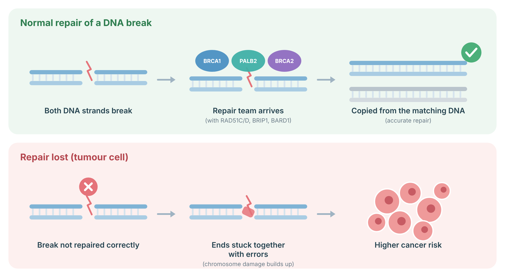
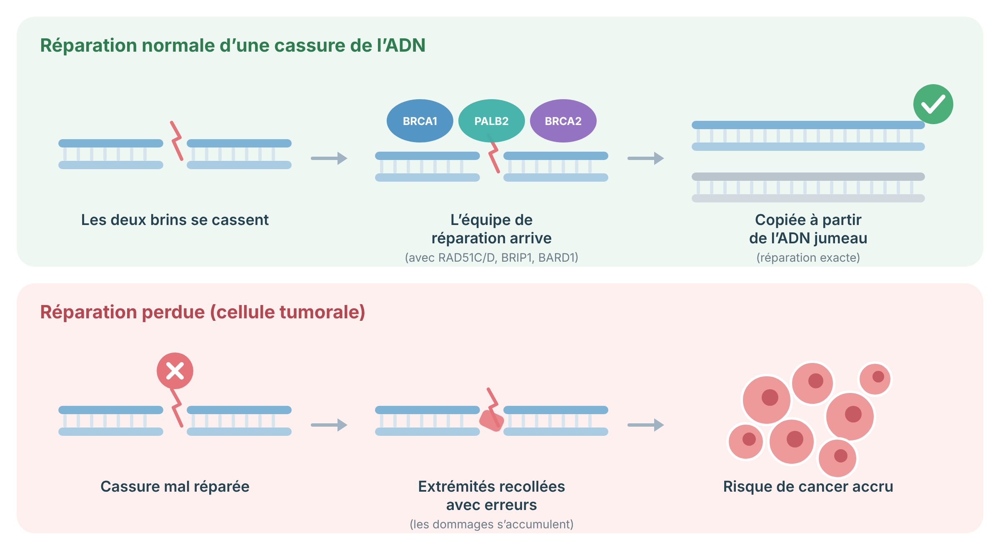

BARD1 Cancer Prevention and Surveillance Protocol
A bilingual patient-and-clinician guide for people with a germline pathogenic or likely pathogenic BARD1 variant.
Contents
Understanding BARD1
BARD1 is a DNA-repair gene. A harmful inherited variant can raise breast-cancer risk, but it does not mean cancer is inevitable. Current evidence supports a moderate increase in breast-cancer risk, especially for triple-negative breast cancer. Evidence does not currently establish a clinically important increase in ovarian, pancreatic, prostate, colorectal, or other adult cancers.
Biology and inheritance
BARD1 encodes a protein that heterodimerizes with BRCA1 through their RING domains. The BRCA1-BARD1 complex functions in homologous recombination, ubiquitin signalling, cell-cycle control, and repair of DNA double-strand breaks. Constitutional loss-of-function variants can impair tumour-suppressor activity.
BARD1 cancer predisposition is inherited in an autosomal dominant manner. Each first-degree relative has a 50% chance of carrying the familial variant. Clinical management applies to pathogenic and likely pathogenic variants. A variant of uncertain significance must not be used to intensify screening or justify preventive surgery.
Variant and phenotype considerations
Most management guidance is gene-level rather than variant-specific. Truncating and other loss-of-function variants have the strongest evidence. Published associations are particularly notable for triple-negative breast cancer. There is not yet a validated BARD1 variant-specific penetrance map suitable for routine clinical decisions.
Our DNA sometimes breaks across both strands. Cells fix these breaks accurately by copying the matching, undamaged DNA, using a team of repair proteins that includes BRCA1, BRCA2, PALB2, RAD51C, RAD51D, BRIP1 and BARD1. If a cell loses both working copies of one of these genes, breaks are glued back together with mistakes, damage builds up, and the risk of cancer (especially breast and ovarian) rises. The same weakness is why some of these cancers respond to PARP-inhibitor medicines.
BARD1: BARD1 is BRCA1’s partner protein; the two work as a pair.

Sources: Prakash R, et al. Cold Spring Harb Perspect Biol 2015;7:a016600 (PubMed); Roy R, et al. Nat Rev Cancer 2011;12:68–78 (PubMed).
Lifetime cancer risks
The best-supported estimate is a lifetime breast-cancer risk of about 17% to 30% for women with a pathogenic BARD1 variant. Family history and other risk factors may move an individual above or below this range. For other cancers, available data are insufficient to assign a reliable excess lifetime risk.
| Cancer or outcome | Estimated lifetime risk / association | Evidence calibration |
|---|---|---|
| Female breast cancer | Approximately 17%–30%; some guideline tables and cohorts use broader ranges up to about 40% | Established moderate-risk association; estimates remain imprecise |
| Triple-negative breast cancer | Enriched among BARD1-associated breast cancers; no single reliable lifetime percentage | Strong subtype association, but absolute subtype risk is uncertain |
| Contralateral breast cancer after a first breast cancer | Not well quantified specifically for BARD1 | Insufficient evidence for gene-specific estimates |
| Ovarian cancer | No established clinically actionable excess risk | Insufficient/inconsistent evidence |
| Male breast, prostate, pancreatic, colorectal and other adult cancers | No established clinically actionable excess risk | Insufficient evidence; manage by personal and family history |
Risk estimates are population averages. Individual risk should be refined using age, detailed pedigree, breast density, reproductive factors, prior biopsies, and a validated model where appropriate.
Breast screening and surveillance
Start annual mammography at age 40, or earlier when the family history supports it. Discuss adding annual breast MRI with contrast. MRI is more sensitive, but it also causes more false alarms and follow-up tests. Continue screening while health and life expectancy make early detection useful.
Checklist for women and other people with breast tissue
- ✓Annual mammography with tomosynthesis from age 40. Consider starting 5–10 years before the earliest breast cancer in the family when clinically appropriate, while avoiding very early mammographic exposure without a clear indication. Routine
- ◇Consider annual contrast-enhanced breast MRI from age 40. MRI is especially reasonable when modelled lifetime breast-cancer risk is at least 20%, the pedigree is strong, breasts are dense, or mammographic sensitivity is limited. Guideline-supported option
- ◇Clinical breast assessment every 6–12 months can be incorporated into a high-risk program, although mortality benefit from clinical examination alone is unproven. Optional / program dependent
- ✓Breast awareness. Promptly assess a new lump, skin or nipple change, unilateral discharge, focal persistent pain, or axillary mass. Routine
- —Do not use screening ultrasound as a substitute for MRI or mammography. Ultrasound may be used for targeted assessment or when MRI cannot be performed. Not routine
- —Do not use thermography, molecular breast imaging, or abbreviated unvalidated pathways as stand-alone screening. Not recommended
After a breast-cancer diagnosis
For a carrier who retains breast tissue, continue annual mammography and consider annual MRI according to age, treatment, breast density, and residual risk. Decisions about contralateral mastectomy should not be based on BARD1 status alone because BARD1-specific contralateral risk is not well defined.
Older age
After age 75, individualize screening according to comorbidity, functional status, prior imaging findings, treatment willingness, and estimated life expectancy. There is no BARD1-specific stopping age supported by trial evidence.
Surveillance for other cancers
There is no proven BARD1-specific screening program for the ovaries or other organs. Follow ordinary population screening and add tests only when personal or family history creates a separate indication.
- —Ovarian cancer: no routine transvaginal ultrasound, CA-125, or risk-reducing salpingo-oophorectomy based on BARD1 alone. Not recommended routinely
- ✓Pancreatic, prostate, colorectal, thyroid, renal and melanoma screening: use population guidance unless another hereditary syndrome or family-history threshold applies. Routine population care
- —Neuroblastoma: although somatic and selected germline BARD1 findings have been studied, no adult carrier surveillance is recommended and predictive testing of minors is generally deferred unless a paediatric genetics team identifies a specific indication. No routine surveillance
Risk-reducing surgery and hormonal considerations
Preventive double mastectomy is not routinely recommended for BARD1 alone. It may still be discussed when the overall breast-cancer risk is high because of a strong family history, prior high-risk breast lesions, very dense breasts, repeated biopsies, or a patient’s informed preferences. Removal of the ovaries is not recommended for BARD1 alone.
Risk-reducing mastectomy
Evidence is insufficient to recommend bilateral risk-reducing mastectomy solely for a BARD1 pathogenic variant. A shared decision should incorporate modelled absolute risk, age, competing health risks, breast imaging feasibility, prior cancer, reconstructive options, body-image and sexual-health priorities, and the limitations of surgery. Mastectomy markedly lowers breast-cancer incidence but does not remove all breast tissue and has not been shown to improve survival specifically in BARD1 carriers.
Gynecologic surgery
Risk-reducing salpingo-oophorectomy or salpingectomy with delayed oophorectomy should not be offered on the basis of BARD1 alone. Use other indications such as a separate genetic finding, a compelling ovarian-cancer pedigree, or standard gynecologic reasons.
Menopause and hormone therapy
BARD1 status alone is not an absolute contraindication to menopausal hormone therapy. Assess breast-cancer history, uterus status, symptom burden, thromboembolic risk, cardiovascular risk, and the lowest effective dose and duration. Systemic hormone therapy is generally avoided after hormone-receptor-positive breast cancer unless managed with the oncology team. Local low-dose vaginal estrogen may be considered for genitourinary symptoms after nonhormonal measures, with oncology input when there is a breast-cancer history.
Chemoprevention and medical prevention
Medicines that lower estrogen-sensitive breast-cancer risk may be reasonable for some people, but they have not been tested specifically in BARD1 carriers. The choice should be based on the person’s total breast-cancer risk, menopausal status, clotting risk, bone health, uterus status, and preferences.
Who may benefit
Offer a formal discussion when the estimated 5-year or lifetime risk meets a recognized high-risk threshold, or when there is atypical hyperplasia, lobular carcinoma in situ, or another accepted indication. Because BARD1-associated cancers are often triple negative, endocrine chemoprevention may not prevent every BARD1-associated tumour.
| Option used in Canada | Typical regimen | Main cautions |
|---|---|---|
| Tamoxifen | 20 mg orally once daily for 5 years; low-dose 5 mg daily for 3 years has evidence for selected intraepithelial neoplasia but is not the universal standard | Venous thromboembolism, hot flashes, cataracts; endometrial cancer risk in people with a uterus; avoid in pregnancy |
| Raloxifene | 60 mg orally once daily for 5 years, postmenopausal only | Venous thromboembolism; less effective than tamoxifen for some outcomes; not for premenopausal patients |
| Anastrozole | 1 mg orally once daily for 5 years, postmenopausal | Bone loss, arthralgia, vasomotor and genitourinary symptoms |
| Exemestane | 25 mg orally once daily for 5 years, postmenopausal | Bone loss, arthralgia, vasomotor and genitourinary symptoms |
Do not prescribe aspirin, metformin, supplements, or ovarian suppression solely to prevent BARD1-associated cancer outside a separate evidence-based indication or clinical trial.
Genetic counselling and family care
Close relatives can choose a targeted test for the exact family variant. A positive result changes breast screening. A negative result for the known family variant usually returns that person to screening based on their own history. Children are usually tested only when they are old enough for the result to affect adult care.
Cascade testing
Offer targeted testing to adult first-degree relatives, then extend through the family based on results. Test an affected relative first when the family variant has not yet been established. Document the laboratory, transcript, HGVS nomenclature, classification, and date of interpretation.
Pedigree and risk refinement
Update a three-generation pedigree at clinically meaningful intervals. Record cancer site, age at diagnosis, pathology, bilateral or multiple primaries, ancestry, and testing results. Consider a validated model such as CanRisk/BOADICEA or Tyrer-Cuzick to integrate non-BARD1 factors, while recognizing that model handling of moderate-risk genes varies.
Reproductive options
Discuss natural conception, prenatal diagnosis, and IVF with preimplantation genetic testing for monogenic disease when requested. These are preference-sensitive options, not medical requirements. BARD1 is autosomal dominant; each pregnancy has a 50% chance of inheriting the familial variant.
Variants of uncertain significance
Do not test relatives for a VUS for predictive purposes and do not alter management solely because of a VUS. Arrange periodic laboratory or clinic review for reclassification.
Lifestyle, nutrition, and general prevention
No diet or supplement can cancel an inherited BARD1 risk. Healthy habits can still lower general cancer and cardiovascular risk. Focus on sustainable activity, a balanced diet, avoiding tobacco, limiting alcohol, sleep, and routine primary care.
- ✓Physical activity: aim for at least 150 minutes of moderate or 75 minutes of vigorous activity weekly, plus strength activity on 2 days when medically appropriate. Recommended
- ✓Alcohol: less is better for breast-cancer prevention; avoiding alcohol gives the lowest alcohol-related risk. Recommended
- ✓Tobacco: avoid smoking and second-hand smoke exposure. Recommended
- ✓Nutrition: emphasize vegetables, fruit, legumes, whole grains, nuts, and minimally processed foods; limit processed meat and highly processed foods. Recommended
- ✓Weight and metabolic health: support a stable, healthy pattern without extreme dieting. Recommended
- —Supplements: do not use high-dose vitamins or “detox” products for cancer prevention unless treating a documented deficiency. Not recommended
Breastfeeding may modestly reduce breast-cancer risk in the general population and can be supported when desired and feasible. Contraceptive choices should be individualized; BARD1-specific comparative data are lacking.
Treatment implications for an affected patient
A germline BARD1 result may help explain why a breast cancer developed, but it does not automatically determine treatment. Tumour features and standard oncology guidelines remain central. Clinical trials are studying whether cancers with BARD1 loss respond differently to DNA-repair-targeted treatments.
BARD1 participates in homologous recombination repair, creating biological rationale for sensitivity to platinum agents or PARP inhibition when the tumour demonstrates homologous recombination deficiency. However, germline BARD1 is not a universal standalone indication for a PARP inhibitor in early or metastatic breast cancer. Use tumour type, stage, regulatory approvals, companion diagnostics, somatic findings, and current disease-specific guidelines.
Immunotherapy decisions should be based on established tumour biomarkers and indications, not germline BARD1 status alone.
Emerging and investigational prevention
Research is exploring polygenic risk scores, shorter MRI methods, blood-based early-detection tests, cancer vaccines, and DNA-repair-targeted prevention. None is ready to replace standard breast imaging for BARD1 carriers.
Participation in a research registry or clinical trial is reasonable when the study has ethics approval, a clear protocol, and does not delay proven screening.
Summary of recommendations
The main action for BARD1 carriers is enhanced breast surveillance. Most other care follows personal history, family history, and general population guidance.
BARD1 breast care
- Annual mammography from age 40.
- Consider annual contrast-enhanced MRI from age 40.
- Earlier start may be reasonable for a striking early-onset family history.
- Continue retained-breast surveillance after breast cancer.
Surgery and medicines
- No routine risk-reducing mastectomy based on BARD1 alone.
- No BARD1-based ovarian surgery.
- Discuss endocrine chemoprevention using total risk, not genotype alone.
Other organs
- No BARD1-specific ovarian, pancreatic, prostate, or colorectal screening.
- Use population programs and pedigree-based indications.
- Investigate symptoms diagnostically.
Family and follow-up
- Offer cascade testing to adult relatives.
- Do not act on a VUS.
- Update pedigree and variant classification.
- Recheck current guidelines before each major decision.
References
These sources support the risk estimates and recommendations. Guideline versions change frequently.
- National Comprehensive Cancer Network. NCCN Clinical Practice Guidelines in Oncology: Genetic/Familial High-Risk Assessment: Breast, Ovarian, Pancreatic, and Prostate. Version 2.2026. NCCN; 2026.
- Cheng HH, Giri VN, Goggins M, et al. Genetic/Familial High-Risk Assessment: Breast, Ovarian, Pancreatic, and Prostate, Version 2.2026: Featured Updates to the NCCN Guidelines. J Natl Compr Canc Netw. 2026;24(2):2-10. doi:10.6004/jnccn.2026.0007.
- Dorling L, Carvalho S, Allen J, et al. Breast Cancer Risk Genes: Association Analysis in More than 113,000 Women. N Engl J Med. 2021;384:428-439. doi:10.1056/NEJMoa1913948.
- Hu C, Hart SN, Gnanaolivu R, et al. A Population-Based Study of Genes Previously Implicated in Breast Cancer. N Engl J Med. 2021;384:440-451. doi:10.1056/NEJMoa2005936.
- Shimelis H, LaDuca H, Hu C, et al. Triple-Negative Breast Cancer Risk Genes Identified by Multigene Hereditary Cancer Panel Testing. J Natl Cancer Inst. 2018;110(8):855-862. doi:10.1093/jnci/djy106.
- Suszynska M, Kozlowski P. Summary of BARD1 Mutations and Precise Estimation of Breast and Ovarian Cancer Risks Associated with the Mutations. Genes (Basel). 2020;11(7):798. doi:10.3390/genes11070798.
- Lee K, Seifert BA, Shimelis H, et al. Clinical validity assessment of genes frequently tested on hereditary breast and ovarian cancer susceptibility sequencing panels. Genet Med. 2019;21:1497-1506. doi:10.1038/s41436-018-0361-5.
- Monticciolo DL, Newell MS, Moy L, Niell B, Monsees B, Sickles EA. Breast Cancer Screening for Women at Higher-Than-Average Risk: Updated Recommendations From the ACR. J Am Coll Radiol. 2023;20(9):902-914. doi:10.1016/j.jacr.2023.04.002.
- Visvanathan K, Fabian CJ, Bantug E, et al. Use of Endocrine Therapy for Breast Cancer Risk Reduction: ASCO Clinical Practice Guideline Update. J Clin Oncol. 2019;37(33):3152-3165. doi:10.1200/JCO.19.01472.
- DeCensi A, Puntoni M, Guerrieri-Gonzaga A, et al. Randomized Placebo Controlled Trial of Low-Dose Tamoxifen to Prevent Local and Contralateral Recurrence in Breast Intraepithelial Neoplasia. J Clin Oncol. 2019;37(19):1629-1637. doi:10.1200/JCO.18.01779.
- Goss PE, Ingle JN, Alés-Martínez JE, et al. Exemestane for Breast-Cancer Prevention in Postmenopausal Women. N Engl J Med. 2011;364:2381-2391. doi:10.1056/NEJMoa1103507.
- Cuzick J, Sestak I, Forbes JF, et al. Anastrozole for prevention of breast cancer in high-risk postmenopausal women (IBIS-II): long-term results. Lancet. 2020;395:117-122. doi:10.1016/S0140-6736(19)32955-1.
Protocole de prévention et de surveillance lié à BARD1
Guide bilingue destiné aux patients et aux cliniciens pour les personnes porteuses d’un variant germinal pathogène ou probablement pathogène de BARD1.
Table des matières
Comprendre BARD1
BARD1 est un gène de réparation de l’ADN. Un variant héréditaire dommageable peut augmenter le risque de cancer du sein, sans rendre le cancer inévitable. Les données actuelles appuient une augmentation modérée du risque, surtout pour le cancer du sein triple négatif. Aucun excès cliniquement important n’est actuellement établi pour les cancers de l’ovaire, du pancréas, de la prostate, colorectal ou d’autres cancers de l’adulte.
Biologie et transmission
BARD1 code une protéine qui forme un hétérodimère avec BRCA1 par leurs domaines RING. Le complexe BRCA1-BARD1 intervient dans la recombinaison homologue, la signalisation par ubiquitine, le contrôle du cycle cellulaire et la réparation des cassures double brin de l’ADN. Les variants constitutionnels avec perte de fonction peuvent réduire cette activité suppresseuse de tumeur.
La prédisposition liée à BARD1 se transmet sur un mode autosomique dominant. Chaque apparenté du premier degré a 50 % de probabilité de porter le variant familial. La conduite clinique s’applique aux variants pathogènes ou probablement pathogènes. Un variant de signification incertaine ne doit pas servir à intensifier le dépistage ni à justifier une chirurgie préventive.
Considérations liées au variant et au phénotype
Les recommandations sont surtout établies au niveau du gène et non pour chaque variant. Les variants tronquants et autres variants avec perte de fonction ont les données les plus solides. L’association avec le cancer du sein triple négatif est particulièrement notable. Il n’existe pas encore de carte de pénétrance propre à chaque variant de BARD1 validée pour les décisions courantes.
Notre ADN se casse parfois sur ses deux brins. Les cellules réparent ces cassures avec précision en copiant l’ADN jumeau intact, grâce à une équipe de protéines de réparation qui comprend BRCA1, BRCA2, PALB2, RAD51C, RAD51D, BRIP1 et BARD1. Si une cellule perd les deux copies fonctionnelles de l’un de ces gènes, les cassures sont recollées avec des erreurs, les dommages s’accumulent et le risque de cancer (surtout du sein et de l’ovaire) augmente. C’est aussi pour cette raison que certains de ces cancers répondent aux médicaments inhibiteurs de PARP.
BARD1: BARD1 est la protéine partenaire de BRCA1; les deux travaillent en duo.

Sources : Prakash R, et al. Cold Spring Harb Perspect Biol 2015;7:a016600 (PubMed); Roy R, et al. Nat Rev Cancer 2011;12:68–78 (PubMed).
Risques de cancer au cours de la vie
L’estimation la mieux étayée du risque de cancer du sein chez les femmes porteuses d’un variant pathogène de BARD1 est d’environ 17 % à 30 %. Les antécédents familiaux et les autres facteurs peuvent déplacer le risque individuel. Pour les autres cancers, les données sont insuffisantes pour attribuer un excès fiable.
| Cancer ou issue | Risque estimé / association | Qualité des données |
|---|---|---|
| Cancer du sein chez la femme | Environ 17 % à 30 %; certaines cohortes et certains tableaux de lignes directrices utilisent des plages plus larges allant jusqu’à environ 40 % | Association établie de risque modéré; estimations encore imprécises |
| Cancer du sein triple négatif | Surreprésenté parmi les cancers associés à BARD1; aucun pourcentage absolu unique fiable | Association de sous-type solide, mais risque absolu incertain |
| Cancer controlatéral après un premier cancer du sein | Mal quantifié spécifiquement pour BARD1 | Données insuffisantes |
| Cancer de l’ovaire | Aucun excès cliniquement actionnable établi | Données insuffisantes ou incohérentes |
| Sein masculin, prostate, pancréas, colorectal et autres cancers de l’adulte | Aucun excès cliniquement actionnable établi | Données insuffisantes; conduite selon l’histoire personnelle et familiale |
Les chiffres sont des moyennes populationnelles. Le risque individuel doit intégrer l’âge, le pedigree, la densité mammaire, les facteurs reproductifs, les biopsies antérieures et, au besoin, un modèle validé.
Dépistage et surveillance mammaires
Commencer une mammographie annuelle à 40 ans, ou plus tôt si l’histoire familiale le justifie. Discuter de l’ajout d’une IRM mammaire annuelle avec contraste. L’IRM est plus sensible, mais entraîne aussi plus de fausses alertes et d’examens supplémentaires.
Liste de vérification
- ✓Mammographie annuelle avec tomosynthèse dès 40 ans. Envisager un début 5 à 10 ans avant le plus jeune cancer du sein familial lorsque cela est cliniquement approprié. Courant
- ◇Envisager une IRM mammaire annuelle avec contraste dès 40 ans. Elle est particulièrement raisonnable si le risque calculé à vie atteint au moins 20 %, si le pedigree est chargé, si les seins sont denses ou si la mammographie est moins sensible. Option appuyée par les lignes directrices
- ◇Évaluation clinique des seins tous les 6 à 12 mois dans un programme à haut risque; le bénéfice sur la mortalité n’est pas démontré pour l’examen seul. Optionnel
- ✓Connaissance de ses seins. Évaluer rapidement une nouvelle masse, un changement cutané ou mamelonnaire, un écoulement unilatéral ou une masse axillaire. Courant
- —Ne pas remplacer l’IRM ou la mammographie par une échographie de dépistage. L’échographie sert surtout à une évaluation ciblée ou lorsque l’IRM est impossible. Non courant
- —Ne pas utiliser la thermographie ou d’autres méthodes non validées comme dépistage autonome. Non recommandé
Après un cancer du sein
Si du tissu mammaire demeure, poursuivre la mammographie annuelle et envisager l’IRM selon l’âge, les traitements, la densité et le risque résiduel. La mastectomie controlatérale ne doit pas reposer sur BARD1 seul.
Âge avancé
Après 75 ans, individualiser selon les comorbidités, l’état fonctionnel, les résultats antérieurs, la volonté de recevoir un traitement et l’espérance de vie.
Surveillance des autres cancers
Il n’existe pas de programme de dépistage propre à BARD1 pour les ovaires ou les autres organes. Suivre les programmes populationnels et ajouter des examens seulement lorsqu’une autre indication personnelle ou familiale existe.
- —Ovaire : pas d’échographie transvaginale, de CA-125 ni de salpingo-ovariectomie préventive de routine fondés sur BARD1 seul. Non recommandé de routine
- ✓Pancréas, prostate, colorectal, thyroïde, rein et mélanome : suivre les recommandations populationnelles sauf autre syndrome ou seuil familial. Soins populationnels
- —Neuroblastome : aucune surveillance de routine chez l’adulte porteur; le dépistage prédictif des mineurs est généralement reporté sauf indication pédiatrique précise. Aucune surveillance courante
Chirurgie de réduction du risque et hormones
La double mastectomie préventive n’est pas recommandée de routine pour BARD1 seul. Elle peut être discutée si le risque global est élevé en raison de l’histoire familiale, de lésions mammaires à haut risque, de seins très denses, de biopsies répétées ou des préférences éclairées. L’ablation des ovaires n’est pas recommandée pour BARD1 seul.
Mastectomie de réduction du risque
Les données sont insuffisantes pour la recommander uniquement en raison d’un variant pathogène de BARD1. La décision partagée doit intégrer le risque absolu calculé, l’âge, les risques concurrents, la faisabilité de l’imagerie, un cancer antérieur, la reconstruction et les priorités de la personne. La chirurgie réduit fortement l’incidence, mais ne retire pas tout le tissu mammaire et n’a pas démontré de gain de survie propre à BARD1.
Chirurgie gynécologique
La salpingo-ovariectomie préventive ou la salpingectomie avec ovariectomie différée ne doivent pas être proposées sur la base de BARD1 seul.
Ménopause et hormonothérapie
BARD1 seul n’est pas une contre-indication absolue à l’hormonothérapie ménopausique. Évaluer l’histoire de cancer du sein, la présence de l’utérus, les symptômes et les risques thromboemboliques et cardiovasculaires. Après un cancer hormonosensible, l’hormonothérapie systémique est généralement évitée sauf discussion avec l’oncologie. Un œstrogène vaginal à faible dose peut être envisagé après les mesures non hormonales, avec avis oncologique s’il existe une histoire de cancer du sein.
Chimioprévention et prévention médicale
Les médicaments qui réduisent le risque de cancers hormonosensibles peuvent convenir à certaines personnes, mais ils n’ont pas été étudiés spécifiquement chez les porteuses de BARD1. La décision dépend du risque mammaire total, du statut ménopausique, du risque de thrombose, de la santé osseuse, de la présence de l’utérus et des préférences.
Personnes pouvant en bénéficier
Proposer une discussion formelle si le risque à 5 ans ou à vie atteint un seuil reconnu, ou en présence d’hyperplasie atypique, de carcinome lobulaire in situ ou d’une autre indication admise. Comme les cancers associés à BARD1 sont souvent triples négatifs, la prévention endocrine ne préviendra pas nécessairement toutes les tumeurs.
| Option utilisée au Canada | Schéma habituel | Principales précautions |
|---|---|---|
| Tamoxifène | 20 mg par voie orale une fois par jour pendant 5 ans; 5 mg/jour pendant 3 ans possède des données dans certaines néoplasies intraépithéliales, sans être la norme universelle | Thromboembolie veineuse, bouffées de chaleur, cataractes; risque endométrial si utérus; éviter pendant la grossesse |
| Raloxifène | 60 mg par voie orale une fois par jour pendant 5 ans, après la ménopause | Thromboembolie; non indiqué avant la ménopause |
| Anastrozole | 1 mg par voie orale une fois par jour pendant 5 ans, après la ménopause | Perte osseuse, arthralgies, symptômes vasomoteurs et génito-urinaires |
| Exémestane | 25 mg par voie orale une fois par jour pendant 5 ans, après la ménopause | Perte osseuse, arthralgies, symptômes vasomoteurs et génito-urinaires |
Ne pas prescrire d’aspirine, de metformine, de suppléments ou de suppression ovarienne uniquement pour prévenir un cancer lié à BARD1 hors indication distincte ou essai clinique.
Conseil génétique et soins familiaux
Les proches peuvent choisir un test ciblé pour le variant familial exact. Un résultat positif modifie le dépistage mammaire. Un résultat négatif pour le variant familial ramène habituellement la personne au dépistage fondé sur sa propre histoire. Les enfants sont généralement testés seulement lorsque le résultat peut modifier les soins à l’âge adulte.
Dépistage en cascade
Offrir le test ciblé aux apparentés adultes du premier degré, puis l’étendre selon les résultats. Documenter le laboratoire, le transcrit, la nomenclature HGVS, la classification et la date d’interprétation.
Pedigree et précision du risque
Mettre à jour un pedigree sur trois générations. Consigner le site du cancer, l’âge au diagnostic, la pathologie, les cancers bilatéraux ou multiples, l’ascendance et les résultats génétiques. Un modèle validé tel que CanRisk/BOADICEA ou Tyrer-Cuzick peut intégrer les facteurs non liés à BARD1.
Options reproductives
Discuter, si souhaité, de conception naturelle, de diagnostic prénatal et de FIV avec test génétique préimplantatoire. Ce sont des choix sensibles aux valeurs, non des obligations médicales. Chaque grossesse a 50 % de probabilité d’hériter du variant.
Variants de signification incertaine
Ne pas tester les proches à des fins prédictives pour un VUS et ne pas modifier la conduite uniquement à cause d’un VUS. Prévoir une révision périodique de la classification.
Mode de vie, nutrition et prévention générale
Aucune diète ni aucun supplément ne peut annuler un risque héréditaire lié à BARD1. Des habitudes saines réduisent néanmoins le risque général de cancer et de maladie cardiovasculaire. Miser sur l’activité durable, une alimentation équilibrée, l’absence de tabac, moins d’alcool, le sommeil et les soins primaires.
- ✓Activité physique : viser au moins 150 minutes d’activité modérée ou 75 minutes d’activité vigoureuse par semaine, plus du renforcement 2 jours, si médicalement approprié. Recommandé
- ✓Alcool : moins est mieux pour la prévention du cancer du sein; l’abstinence donne le risque lié à l’alcool le plus faible. Recommandé
- ✓Tabac : éviter le tabagisme et la fumée secondaire. Recommandé
- ✓Alimentation : privilégier légumes, fruits, légumineuses, grains entiers, noix et aliments peu transformés. Recommandé
- ✓Poids et santé métabolique : soutenir des habitudes stables sans régime extrême. Recommandé
- —Suppléments : éviter les mégadoses et produits « détox » sauf carence documentée. Non recommandé
L’allaitement peut réduire modestement le risque mammaire dans la population générale. Les choix contraceptifs doivent être individualisés; les données comparatives propres à BARD1 manquent.
Considérations thérapeutiques chez une personne atteinte
Un résultat germinal BARD1 peut aider à comprendre la prédisposition, mais il ne détermine pas automatiquement le traitement. Les caractéristiques de la tumeur et les lignes directrices oncologiques demeurent centrales. Des essais évaluent les traitements ciblant la réparation de l’ADN.
BARD1 intervient dans la recombinaison homologue, ce qui fournit une justification biologique pour une sensibilité aux sels de platine ou aux inhibiteurs de PARP si la tumeur présente un déficit de recombinaison homologue. Toutefois, un variant germinal BARD1 n’est pas, à lui seul, une indication universelle à un inhibiteur de PARP dans le cancer du sein. Utiliser le type tumoral, le stade, les autorisations réglementaires, les biomarqueurs et les lignes directrices propres à la maladie.
Les décisions d’immunothérapie doivent reposer sur les biomarqueurs et indications établis, non sur BARD1 germinal seul.
Prévention émergente et expérimentale
La recherche étudie les scores polygéniques, les protocoles d’IRM abrégés, les tests sanguins de détection précoce, les vaccins et la prévention ciblant la réparation de l’ADN. Aucune de ces approches ne remplace actuellement l’imagerie mammaire standard.
La participation à un registre ou à un essai est raisonnable si le protocole est approuvé sur le plan éthique et ne retarde pas le dépistage éprouvé.
Résumé des recommandations
L’action principale chez les personnes porteuses de BARD1 est une surveillance mammaire accrue. Les autres soins reposent surtout sur l’histoire personnelle, familiale et les recommandations populationnelles.
Soins mammaires BARD1
- Mammographie annuelle dès 40 ans.
- Envisager une IRM annuelle avec contraste dès 40 ans.
- Un début plus précoce peut être raisonnable si l’histoire familiale est très précoce.
- Poursuivre la surveillance du tissu mammaire restant après un cancer.
Chirurgie et médicaments
- Pas de mastectomie préventive de routine pour BARD1 seul.
- Pas de chirurgie ovarienne fondée sur BARD1.
- Discuter de chimioprévention selon le risque total.
Autres organes
- Pas de dépistage propre à BARD1 pour l’ovaire, le pancréas, la prostate ou le côlon.
- Utiliser les programmes populationnels et les indications familiales.
Famille et suivi
- Offrir le dépistage en cascade aux adultes.
- Ne pas agir sur un VUS.
- Mettre à jour le pedigree et la classification.
- Revérifier les lignes directrices avant toute décision majeure.
Références
Ces sources appuient les estimations et recommandations. Les versions des lignes directrices changent fréquemment.
- National Comprehensive Cancer Network. NCCN Clinical Practice Guidelines in Oncology: Genetic/Familial High-Risk Assessment: Breast, Ovarian, Pancreatic, and Prostate. Version 2.2026. NCCN; 2026.
- Cheng HH, Giri VN, Goggins M, et al. Genetic/Familial High-Risk Assessment: Breast, Ovarian, Pancreatic, and Prostate, Version 2.2026: Featured Updates to the NCCN Guidelines. J Natl Compr Canc Netw. 2026;24(2):2-10. doi:10.6004/jnccn.2026.0007.
- Dorling L, Carvalho S, Allen J, et al. Breast Cancer Risk Genes: Association Analysis in More than 113,000 Women. N Engl J Med. 2021;384:428-439. doi:10.1056/NEJMoa1913948.
- Hu C, Hart SN, Gnanaolivu R, et al. A Population-Based Study of Genes Previously Implicated in Breast Cancer. N Engl J Med. 2021;384:440-451. doi:10.1056/NEJMoa2005936.
- Shimelis H, LaDuca H, Hu C, et al. Triple-Negative Breast Cancer Risk Genes Identified by Multigene Hereditary Cancer Panel Testing. J Natl Cancer Inst. 2018;110(8):855-862. doi:10.1093/jnci/djy106.
- Suszynska M, Kozlowski P. Summary of BARD1 Mutations and Precise Estimation of Breast and Ovarian Cancer Risks Associated with the Mutations. Genes (Basel). 2020;11(7):798. doi:10.3390/genes11070798.
- Lee K, Seifert BA, Shimelis H, et al. Clinical validity assessment of genes frequently tested on hereditary breast and ovarian cancer susceptibility sequencing panels. Genet Med. 2019;21:1497-1506. doi:10.1038/s41436-018-0361-5.
- Monticciolo DL, Newell MS, Moy L, Niell B, Monsees B, Sickles EA. Breast Cancer Screening for Women at Higher-Than-Average Risk: Updated Recommendations From the ACR. J Am Coll Radiol. 2023;20(9):902-914. doi:10.1016/j.jacr.2023.04.002.
- Visvanathan K, Fabian CJ, Bantug E, et al. Use of Endocrine Therapy for Breast Cancer Risk Reduction: ASCO Clinical Practice Guideline Update. J Clin Oncol. 2019;37(33):3152-3165. doi:10.1200/JCO.19.01472.
- DeCensi A, Puntoni M, Guerrieri-Gonzaga A, et al. Randomized Placebo Controlled Trial of Low-Dose Tamoxifen to Prevent Local and Contralateral Recurrence in Breast Intraepithelial Neoplasia. J Clin Oncol. 2019;37(19):1629-1637. doi:10.1200/JCO.18.01779.
- Goss PE, Ingle JN, Alés-Martínez JE, et al. Exemestane for Breast-Cancer Prevention in Postmenopausal Women. N Engl J Med. 2011;364:2381-2391. doi:10.1056/NEJMoa1103507.
- Cuzick J, Sestak I, Forbes JF, et al. Anastrozole for prevention of breast cancer in high-risk postmenopausal women (IBIS-II): long-term results. Lancet. 2020;395:117-122. doi:10.1016/S0140-6736(19)32955-1.